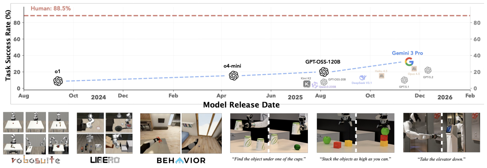
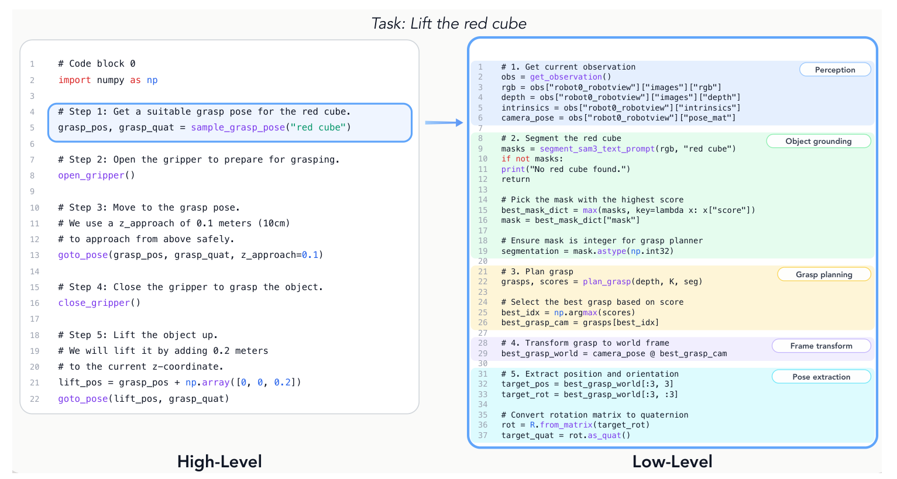

CaP-X 深度调研笔记
速览
| 项 | 内容 |
|---|---|
| 一句话 | Code-as-Policy 的"研究平台四件套"：CaP-Gym（187 任务交互环境）+ CaP-Bench（12 模型分层评测）+ CaP-Agent0（免训练 agentic 框架）+ CaP-RL（可验证奖励 GRPO） |
| 角色 | 全簇的地基：RATs 拿 CaP-Agent0 当宿主与基线，ASPIRE 拿它当被超对象（+77pp），Harness VLA 拿 CaP-X 18.2% 当基线 |
| 核心发现 | 性能随人工抽象升高、随抽象撤除下降（设计者脚手架依赖）；但测试时计算 scaling（多轮交互/执行反馈/视觉差分/技能合成/集成推理）能把低层原语上的鲁棒性补回来 |
| 头部结果 | CaP-Agent0 多任务人类级；CaP-RL 把 Qwen2.5-Coder-7B 从 25/4/30 拉到 80/44/93（Lift/Stack/Wipe），sim2real 差距极小 |

① 动机
- CaP 系统此前依赖高层人工原语（
stack_objs_in_order()一类宏），无法回答两个问题：LLM 到底会不会控制机器人，还是只会调别人写好的宏？ 不同模型/交互方式/感知接地方式的差异有多大？ - 没有统一交互环境与分层评测，这些无法系统研究——于是先造平台。
② 架构：四件套

| 组件 | 内容 |
|---|---|
| CaP-Gym | Gymnasium 接口上的分层控制框架：低层环境循环（仿真/真机）× 有状态代码执行器循环（REPL）；agent 合成并执行组合感知/控制原语的程序；统一感知基元（SAM3 分割、Molmo 点选）与控制基元（PyRoki 规划/IK）；覆盖 RoboSuite/LIBERO-PRO/BEHAVIOR 共 187 任务，桌面/双臂/移动 |
| CaP-Bench | 三条轴 × 7 核心任务（Cube Lift/Stack/Spill Wipe/Peg Insertion/Cube Re-stack/Two-Arm Lift/Two-Arm Handover，每 tier 100 trials，12 模型）：① 抽象层级 S1-S4（状态→噪声感知→高层宏→原子原语）② 时序交互（单轮 S / 多轮 M）③ 感知接地（含 VDM 视觉差分模块） |
| CaP-Agent0 | 免训练 agentic 框架：多轮交互 + 结构化执行反馈 + 视觉差分 + 自动技能合成 + 并行集成推理；多个任务恢复人类级可靠性 |
| CaP-RL | 用 GRPO + 可验证奖励对 coding agent 做强化学习（六篇中唯一动底座权重的） |
③ 机制：CaP-Bench 揭示的规律（全文最有引用价值的结论）
- 脚手架依赖：S1（状态观测+高层宏）人人高分；S4（噪声感知+原子原语）连最强模型 <30%。能力差在"抽象层级"上被放大。
- 测试时计算 scaling 补差距：多轮调试 + 执行反馈 + VDM + 技能合成 + 集成推理，低层原语上的鲁棒性可恢复到人类级。
- 扰动下代码 agent > VLA（Table 2，LIBERO-PRO）：CaP-Agent0 22/18/26 vs π0.5 17/1/38、π0 0/0/0、OpenVLA 0/0/0——这是整条 agentic 路线的存在性证据。
④ 数据与基准（tex 已验）
| 实验 | 数字 |
|---|---|
| CaP-RL（Qwen2.5-Coder-7B，100 trials/任务） | Cube Lift 25→80、Cube Stack 4→44、Spill Wipe 30→93 |
| CaP-RL 真机（Franka，25 trials） | 接近仿真（sim2real 差距极小） |
| BEHAVIOR 导航任务 | CaP-Agent0 拾起收音机 72% / 易拉罐 52% vs 人类 80/84（导航成功率 88/80） |
| LIBERO-PRO（Table 2，Pos/Task 扰动平均） | 见上；三个扰动类下 CaP-Agent0 全面优于 VLA |
⑤ 信息流（CaP-Gym 一轮）
环境状态 → 结构化感知基元输出（SAM3 分割/Molmo 点选 → 语义对象） → agent 写代码（组合原语，REPL 里保持执行上下文） → 执行 → 视觉差分（VDM）给出"这步改变了什么" → 结构化反馈 → 失败则多轮调试 / 检索合成的技能
⑥ 例子
Peg Insertion 在 S4 层（噪声感知 + 原子原语）：单轮几乎全灭；CaP-Agent0 开多轮 + VDM 后，agent 先写"探测孔位的接触扫描程序"再插入——这正是 RAX 后来"主动感知"涌现的雏形。
⑦ 实验·局限
- 局限（作者自陈 + 读报）：它是平台与基准而非单一方法；脚手架依赖被自己证实（高层宏分数好看但泛化差）；评测规模与任务多样性仍有限；CaP-RL 只在 7B 开源模型上验证。
- 工程事实：仓库只有 main/v0.1 两分支、无 tag/release；
uv管理依赖，需 CUDA GPU 与 Isaac Sim（BEHAVIOR 任务）。
⑧ 与另外五篇的关系
- RATs：技能即插回 CaP-Agent0（+8.9/+8.8）；直接引用其多轮反馈与技能合成机制。
- ASPIRE：以 CaP-X 为最强基线并反超 77pp——补上了"经验沉淀 + 失败可见性"。
- RAX：把 CaP-Bench 的"测试时计算 scaling"结论延伸为"探索预算 scaling"。
- HarnessPAI / Zetta：在 CaP 纯代码路线暴露的接触-rich 短板处，分别引入冻结 VLA 原语（混合）与运行时 critic（VLA 为主）。
- 与 Harness VLA（簇外）：Harness VLA 的 LIBERO-Pro 基线表里 CaP-X=18.2%——注意其协议与 CaP-X 自报口径不同。